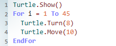
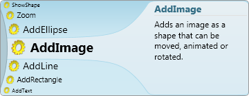
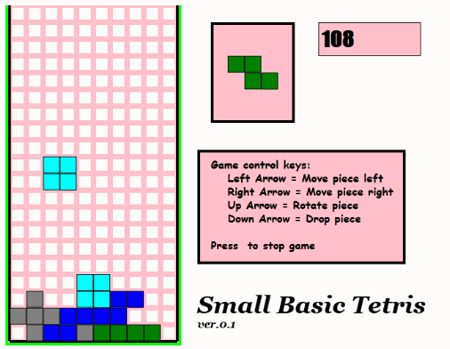

Welcome to Small Basic!
Small Basic is the only programming language created specially to help students transition from block-based coding to text-based coding. By teaching the fundamental elements of syntax-based languages in an approachable manner, Small Basic gives students the skills and confidence to tackle more complex programming languages such as Java and C#. You can also build applications for Kinect, Lego Mindstorm, Raspberry Pi, Arduino, Oculus Rift, and more using Small Basic.
For ages 7 to 107, Small Basic is one of the easiest ways to learn to code.
Simple
Small Basic combines a friendly environment with a very simple language and a rich and engaging set of libraries to make your programs and games pop! In a matter of few lines of code, you will be well on your way to creating your very own game!
With smart coding hints from IntelliSense, Small Basic makes writing code a breeze.
Social
Share your programs with your friends and let them import your published programs and run them on their computer. Using the Silverlight player, you can even post your games on your own blogs and websites and play them in the browser.
Gradual
Learn programming concepts starting with the fundamentals and move your way up. Small Basic is based on .NET and what you learn here could be easily applied to other .NET programming languages like Visual Basic. And when you graduate to Visual Basic, you can bring your existing programs with you using a built-in conversion utility.
Why Learn to Code?
You might be wondering: why should I learn to code anyways? Coding is a fun way to express your imagination, creativity, and logical thinking all at once! When you learn to code, you develop various skills, such as how to break down complex problems and solve them step by step. Software is the language of our world, so learning to code can really help you in the future! If you want to learn more, watch this video!